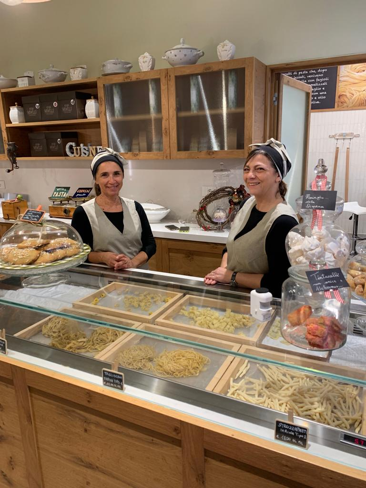

Non entri semplicemente in una gastronomia: entri nella storia, nei ricordi e nella cucina di famiglia.
La dispensa di Irma nasce dall'idea di portare la mia esperienza enogastronomica elaborando le ricette della tradizione della cucina romagnola. Fin dal primo giorno, ho voluto creare un luogo in cui le persone potessero ritrovare i profumi della domenica e la cura per il buon cibo fatto a mano.
Una particolare attenzione è stata riservata alla ricerca delle migliori materie prime dei nostri produttori locali, per garantire sempre la freschezza e la genuinità dei nostri prodotti.
Ho voluto coniugare le mie ricette alle mie origini, ricercando una ristretta selezione delle eccellenze tipiche dell'Alto Appennino Modenese. È qui che nasce la vera identità della nostra bottega: il perfetto equilibrio tra due territori meravigliosi, che si incontrano e si fondono nei nostri piatti.

Oggi La Dispensa di Irma è un punto di riferimento in Via Aurelio Bertola, a due passi dalle meraviglie storiche di Rimini. Un piccolo angolo di tradizione dove ogni giorno, con la stessa passione di sempre, prepariamo i nostri piatti per voi.
Scopri come nasce la nostra pasta